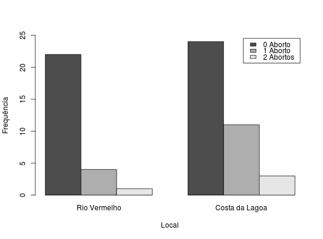
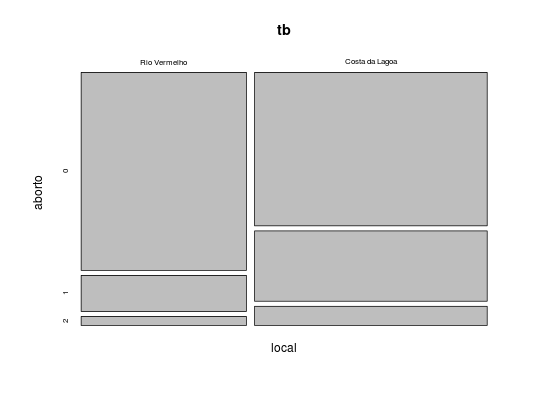

Um pesquisador estudou uma possível associação entre a localização, dois locais, e o número de abortos de crianças do sexo feminino.
Um data.frame com 65 observações e 2 variáveis, em que
localabortoAndrade, D. F., Ogliari, P. J. (2010). Estatística para as ciências agrárias e biológicas com noções de experimentação (2nd ed.). Florianópolis, SC. Editora da UFSC. (Tabela 2.23, pág. 105)
data(AndradeTb2.23) str(AndradeTb2.23)#> 'data.frame': 65 obs. of 2 variables: #> $ local : Factor w/ 2 levels "Rio Vermelho",..: 2 2 2 2 2 2 2 2 2 2 ... #> $ aborto: int 0 0 1 0 0 0 0 2 2 0 ...(tb <- xtabs(data = AndradeTb2.23))#> aborto #> local 0 1 2 #> Rio Vermelho 22 4 1 #> Costa da Lagoa 24 11 3barplot(t(tb), beside = TRUE, legend.text = c("0 Aborto","1 Aborto", "2 Abortos"), ylim = c(0, 25), xlab = "Local", ylab = "Frequência")mosaicplot(tb)